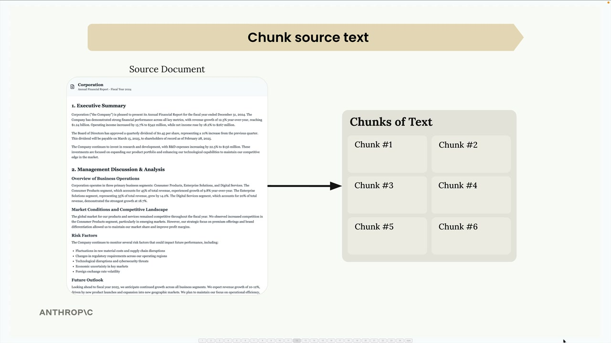
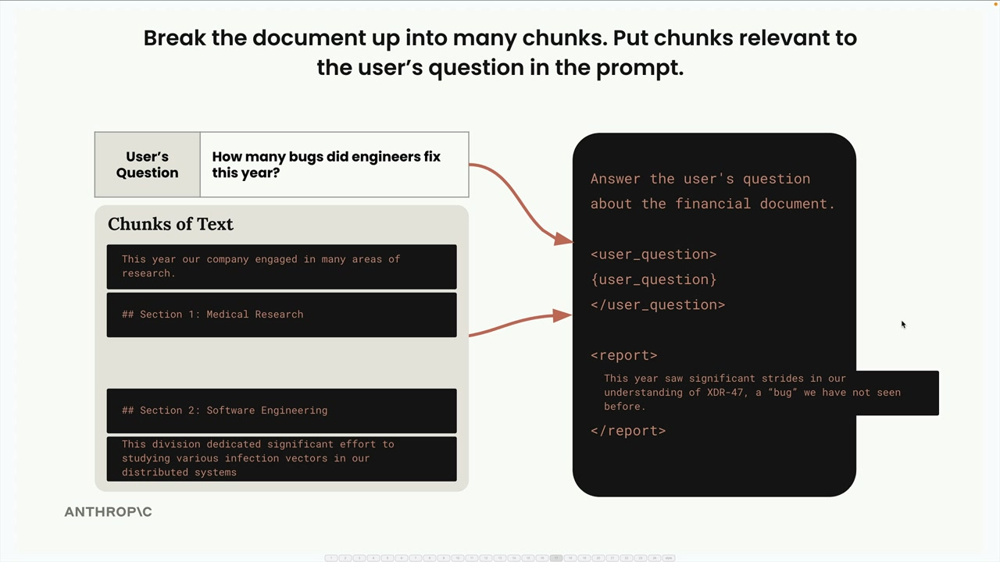
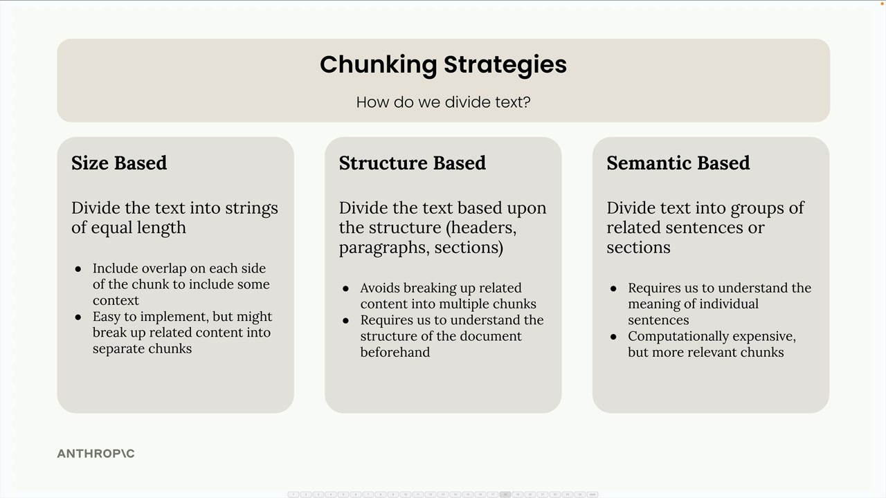
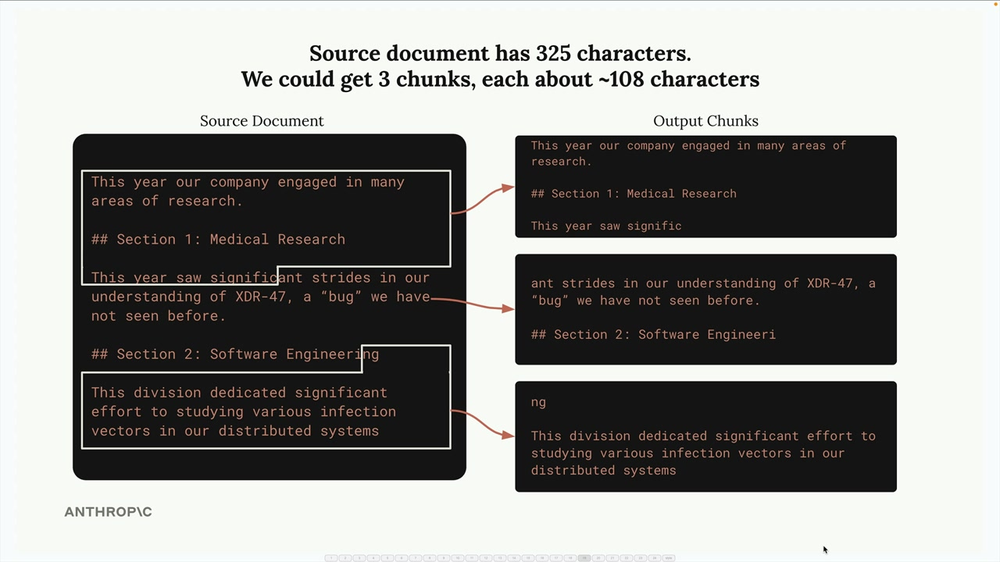
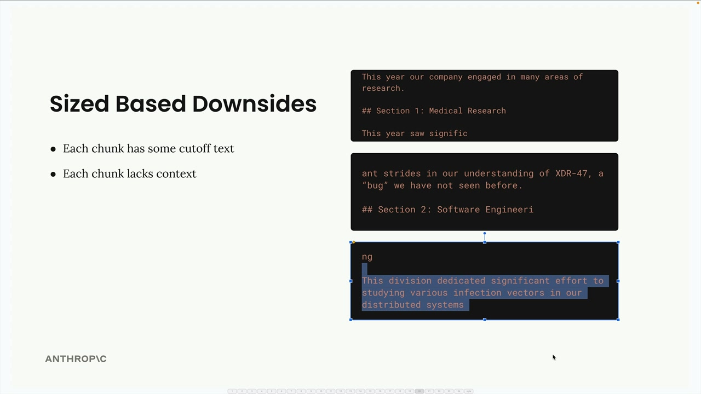
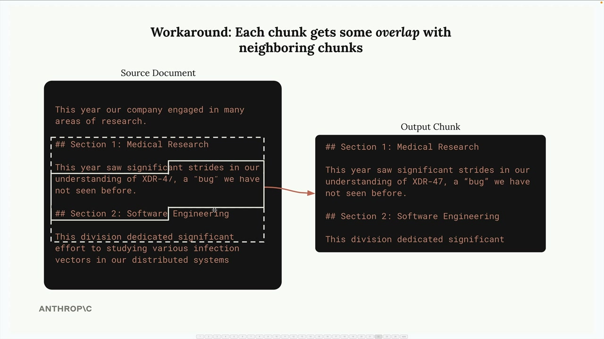
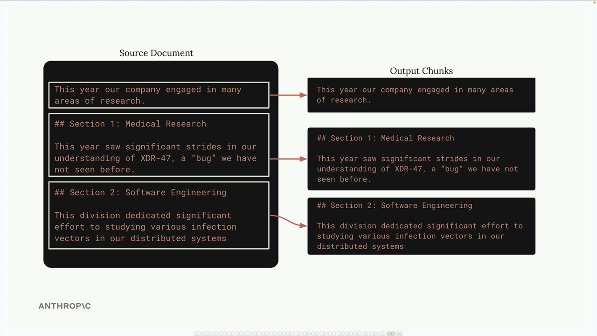

텍스트 청킹 전략
텍스트 청킹은 RAG(검색 증강 생성) 파이프라인을 구축하는 데 있어 가장 중요한 단계 중 하나입니다. 문서를 어떻게 분할하느냐는 전체 시스템의 품질에 직접적인 영향을 미칩니다. 잘못된 청킹 전략은 프롬프트에 관련 없는 컨텍스트가 삽입되어 AI가 완전히 잘못된 답변을 제공하는 결과를 초래할 수 있습니다.

이런 예시를 생각해보세요: 의학 연구와 소프트웨어 공학에 관한 섹션이 있는 문서가 있습니다. 청킹이 제대로 되지 않으면, "엔지니어들이 올해 몇 개의 버그를 수정했나요?"라고 묻는 사용자가 소프트웨어 공학 대신 의학 연구 정보를 받을 수 있습니다. 단순히 의학 섹션에 다른 맥락에서 "버그"라는 단어가 포함되어 있었기 때문입니다.

이것이 바로 올바른 청킹 전략을 선택하는 것이 매우 중요한 이유입니다. 세 가지 주요 접근 방식을 살펴보겠습니다.
크기 기반 청킹

크기 기반 청킹은 가장 단순한 접근 방식으로, 텍스트를 동일한 길이의 문자열로 나눕니다. 325자짜리 문서가 있다면 각각 약 108자씩 세 개의 청크로 분할할 수 있습니다.

이 방법은 구현이 쉽고 모든 유형의 문서에서 작동하지만, 명확한 단점이 있습니다:
- 문장 중간에서 단어가 잘릴 수 있습니다
- 청크가 주변 텍스트의 중요한 컨텍스트를 잃습니다
- 섹션 헤더가 해당 내용과 분리될 수 있습니다

이러한 문제를 해결하기 위해 청크 사이에 오버랩을 추가할 수 있습니다. 즉, 각 청크가 인접한 청크의 일부 문자를 포함하여 더 나은 컨텍스트를 제공하고 완전한 단어와 문장을 보장합니다.

다음은 기본 구현 예시입니다:
def chunk_by_char(text, chunk_size=150, chunk_overlap=20):
chunks = []
start_idx = 0
while start_idx < len(text):
end_idx = min(start_idx + chunk_size, len(text))
chunk_text = text[start_idx:end_idx]
chunks.append(chunk_text)
start_idx = (
end_idx - chunk_overlap if end_idx < len(text) else len(text)
)
return chunks구조 기반 청킹
구조 기반 청킹은 문서의 자연스러운 구조(헤더, 단락, 섹션)를 기반으로 텍스트를 나눕니다. Markdown 파일과 같이 잘 정형화된 문서에 매우 효과적입니다.

Markdown 문서의 경우 헤더 마커를 기준으로 분할할 수 있습니다:
def chunk_by_section(document_text):
pattern = r"\n## "
return re.split(pattern, document_text)이 접근 방식은 각 청크가 완전한 섹션을 나타내기 때문에 가장 깔끔하고 의미 있는 청크를 제공합니다. 그러나 문서 구조에 대한 보장이 있을 때만 작동합니다. 실제 문서 중 상당수는 명확한 구조적 마커가 없는 일반 텍스트나 PDF입니다.
의미 기반 청킹
의미 기반 청킹은 가장 정교한 접근 방식입니다. 텍스트를 문장으로 나눈 다음, 자연어 처리를 사용하여 연속된 문장들이 얼마나 관련되어 있는지 판단합니다. 관련된 문장 그룹으로 청크를 구성합니다.
이 방법은 계산 비용이 많이 들지만 가장 관련성 높은 청크를 생성합니다. 개별 문장의 의미를 이해해야 하며 다른 전략들보다 구현이 더 복잡합니다.
문장 기반 청킹
실용적인 중간 방법은 문장 단위로 청킹하는 것입니다. 정규 표현식을 사용하여 텍스트를 개별 문장으로 분할한 다음, 선택적 오버랩을 적용하여 청크로 묶습니다:
def chunk_by_sentence(text, max_sentences_per_chunk=5, overlap_sentences=1):
sentences = re.split(r"(?<=[.!?])\s+", text)
chunks = []
start_idx = 0
while start_idx < len(sentences):
end_idx = min(start_idx + max_sentences_per_chunk, len(sentences))
current_chunk = sentences[start_idx:end_idx]
chunks.append(" ".join(current_chunk))
start_idx += max_sentences_per_chunk - overlap_sentences
if start_idx < 0:
start_idx = 0
return chunks전략 선택하기
선택은 전적으로 사용 사례와 문서 보장 여부에 달려 있습니다:
- 구조 기반 : 문서 형식을 제어할 수 있을 때(예: 내부 회사 보고서) 최상의 결과
- 문장 기반 : 대부분의 텍스트 문서에 적합한 중간 방법
- 크기 기반 : 코드를 포함한 모든 콘텐츠 유형에서 작동하는 가장 신뢰할 수 있는 폴백
오버랩을 적용한 크기 기반 청킹은 단순하고 신뢰할 수 있으며 모든 문서 유형에서 작동하기 때문에 프로덕션에서 자주 선택됩니다. 완벽한 결과를 보장하지는 않지만 파이프라인을 망가뜨리지 않는 합리적인 청크를 일관되게 생성합니다.
기억하세요: 단일한 "최선의" 청킹 전략은 없습니다. 올바른 접근 방식은 특정 문서, 사용 사례, 그리고 구현 복잡성과 청크 품질 사이에서 감수할 수 있는 트레이드오프에 따라 달라집니다.